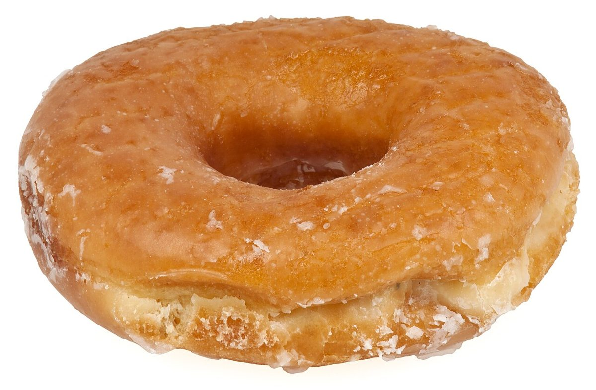
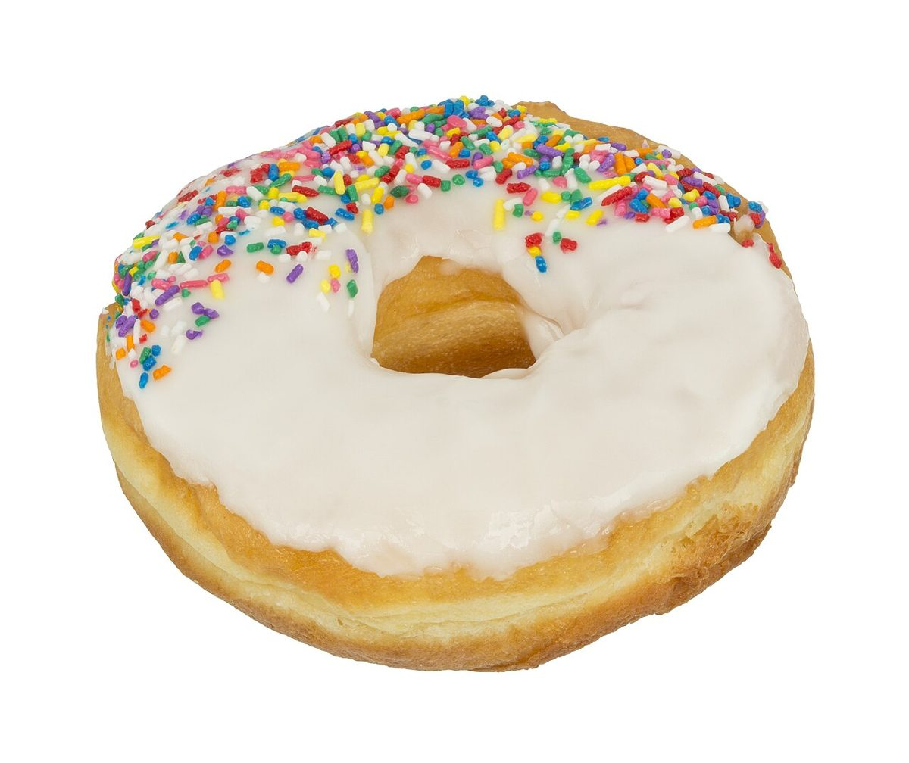
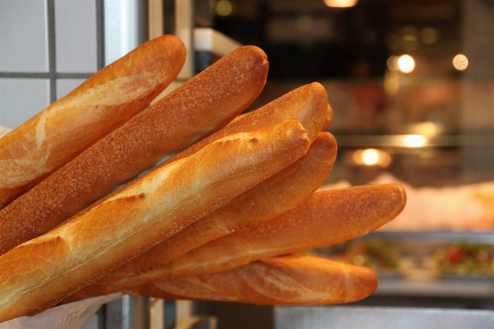
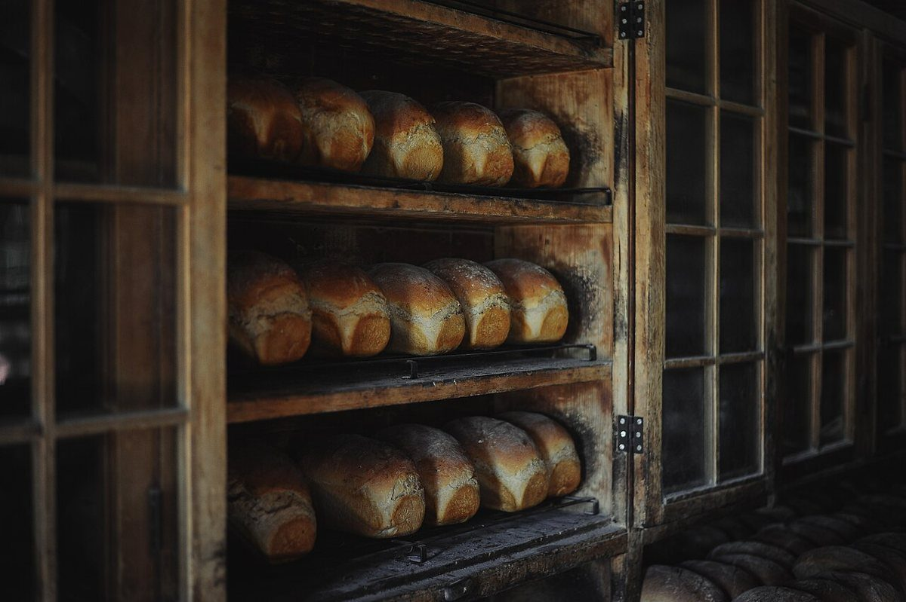

Oひとつめ
輪ひとつめ
ぐるりと閉じた丸いかたち。Oの字をそのまま描いたら、ドーナツの輪になりました。

七文字
お店について確認できているのは、所在地とInstagramのアカウントだけです。このページは、七文字を一つずつ辿る制作側の連想です。
以下の文章はすべて、制作側がローマ字の字形や色から思いついた連想です。お店の理念・由来・実際の様子とは無関係で、提供内容を示すものでもありません。

ぐるりと閉じた丸いかたち。Oの字をそのまま描いたら、ドーナツの輪になりました。

輪に色をのせるなら、どんな色だろう。このサイトでは、いちごのようなピンクと、ブルーベリーのような紺を選びました。

横に一本、縦に一本。T字の看板のように、いまは「Instagram @oto_panya」がいちばんの手がかりです。
輪の上にちりばめた小さな粒。三つめのOは、にぎやかに。

OOTOの次は、いよいよPAN。まっすぐ伸びるかたちを、Pの縦棒に重ねてみました。

Aの字は屋根の形。窯の火を思わせる、あたたかい橙色の光を並べました(お店の設備とは関係ありません)。

Nの字のジグザグのように、棚の段に並ぶ。最後の一文字で、七文字がそろいます。
